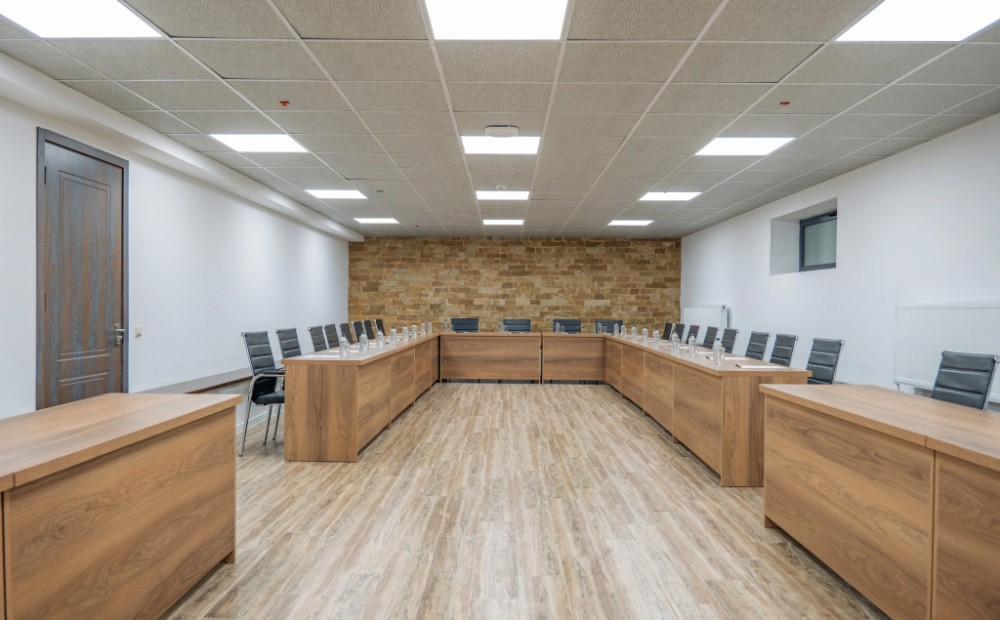

ყავის შესვენება
- ყავა
- ჩაი
- ნატურალური წვენი
- წყალი
- რძე
- მინერალური წყალი
- ლორის სენდვიჩი კრუასანში
- ქლაბ სენდვიჩი
- ბრუსკეტა ჯემით და კამამბერით
- ხილი
- მინი შუ
- მინი ეკლერი
კორპორატიული შეთავაზება
სივრცე შენი გუნდისთვის, ახალი იდეებისა და მნიშვნელოვანი დღეებისთვის.

SABADURI HILLS
საკონფერენციო სივრცე, სასტუმროს ნომრები და რესტორანი — დაგეგმე გუნდის ვიზიტი და მოითხოვე შენს ღონისძიებაზე მორგებული შეთავაზება.
მოგვწერე ღონისძიების შესახებ
ბუნებაში, შენთან ახლოს.
შეარჩიე თარიღები და მოგვწერე — ერთად დავგეგმოთ შენი დასვენება.
მოითხოვე ჯავშანი